Scene red-team — dellhollow
20260806-2-dellhollow-checklist · judge gemini:gemini-3.6-flash (replayed from run-tmp-qv-del + run-tmp-qr-del) (pinned) ·
15 plates · checklist · naive N=3 ·
generated 2026-08-07T01:50:23.289Z by tools/scene_redteam.mjs · plates baked 2026-08-06T11:26:59Z .. 2026-08-06T22:15:20Z1 The prompts, verbatim
Exactly what each judge call was asked (judge gemini:gemini-3.6-flash (replayed from run-tmp-qv-del + run-tmp-qr-del), pinned) —
read these first; everything below is these prompts' output. The naive prompt is fixed for the whole
run; the checklist and sceptic prompts are templates filled per plate — shown here filled with this
run's own data. The style paragraph switches between art and blockout mode; this run used
art mode, and that is the version shown.
Stage 1 — the naive critic (every plate, each of the N looks)
You are a first-time player. The image is one frame of a video game, exactly what is on
screen. You have never been here, you have no map, and nobody has told you anything.
Critique this frame. Report anything that would make the place HARD TO UNDERSTAND or
HARD TO PLAY. Use exactly these category tokens:
navigation — you would not know where to go, or the way on is ambiguous
occlusion — something blocks your understanding of the space
geometry — incomplete, stray, floating, clipping, or plainly ugly geometry
exit — a door or way out that does not read as a door or a way out
immersion — floating objects, z-fighting, wrong scale, anything that breaks belief
The scene is a finished hand-stylised illustration; a painterly or simplified look is
the intended art style and is not a problem in itself.
RULES. Report only things you can actually point at in this image. Do NOT invent
problems to fill the list, and do NOT list matters of taste. If the frame is fine,
return an empty list — that is a valid and useful answer. At most 6 findings.
severity: 3 = a player would be stuck or would think the game is broken, 2 = clearly
wrong but survivable, 1 = a blemish.
Answer with JSON only, in this exact shape:
{"findings":[{"category":"occlusion","where":"a few words locating it in the frame",
"bbox":[x0,y0,x1,y1],"severity":2,"desc":"one sentence"}]}
bbox is in normalised image coordinates: x 0 at the left edge and 1 at the right, y 0
at the top edge and 1 at the bottom.Stage 1 — the checklist auditor (filled for plate "quay-west", 17 items derived from the map/ownership contract)
You are auditing one frame of a video game. The designer says the things listed below
are in this shot and that a player should be able to find them. For EACH item, decide
which of these four is true, using the exact token:
FINDABLE a first-time player would find it AND know what it is
OCCLUDED it is hidden behind something else (say what hides it)
VISIBLE-BUT-ILLEGIBLE part of it is on screen, but it does not read as what it is
— too small, too dark, merged into its background, cropped,
or it looks like some other kind of thing entirely
ABSENT you cannot see it anywhere in this frame at all
Items marked [QUALITY] are different: they are already in frame, so findability is
not the question — how well they HOLD UP is. For those items, and ONLY those, answer
with one of these tokens instead:
CONVINCING it holds up — it reads as the real thing at this scene's own hour
WEAK it reads, but visibly falls short — say exactly what falls short
FAILING it breaks the picture — it reads as a flat fill, a painted plane, or
an unfinished edge of the world
For a [QUALITY] item, put the bbox around the specific area your judgment rests on,
and make "desc" a JUDGMENT with a reason — never a neutral description of what is
there.
The scene is a finished hand-stylised illustration; a painterly or simplified look is
the intended art style and is not a problem in itself.
YOU ARE NOT TOLD WHERE ANYTHING IS. Do not guess a position to be helpful: if you
cannot find it, ABSENT is the correct and useful answer. If you DO find it, give the
bbox where you see it so your reading can be checked against the model.
Two rules that keep the answers useful. (1) Names like "shelf-west" are the designers'
internal names for other areas; a player never sees them, so NEVER report a missing
sign, label or name as a problem — judge only whether the thing itself can be found and
recognised for what it is. (2) Judge what is DRAWN, not what a game would normally add:
no icons, markers or waypoints exist in this art and their absence is not a finding.
Items:
1. Cookhouse — a building (warm windows over the gorge at night; the tavern-warmth hub)
2. Notice board — a prop
3. Harbor Deck — a plaza (social core; night-on-the-quay scene)
4. Deep Stairs (head) — a stairhead (quiet corner of the quay; the discreet route down. Hidden from player map.)
5. Market stalls — a stalls
6. the route between Harbor Deck and Cookhouse — a deck (RE-ROUTED 2026-08-02d with the door (see the cookhouse landmark's _redline): the approach hugs the same outer rail as the deep-stairs deck edge, so it reaches the north front instead of crossing the market to the building's blind south side. THE WAYPOINT IS LOAD-BEARING, not decoration: scenegraph_derive's streetDir takes the LAST waypoint as the street direction, and the return spawn is the doorstep plus 2.9 m along it. Left at (46.9,12) the spawn landed at (42.3,15.2) — inside the cookhouse's own footprint — and only the off-network search would have saved it.)
7. the route between Harbor Deck and Notice board — a deck
8. the route between Harbor Deck and Deep Stairs (head) — a deck (hugs the outer rail away from the market bustle)
9. the route between Harbor Deck and Market stalls — a deck
10. the route between Deep Stairs (head) and Deep Stairs (foot) — a stairs (the discreet night route: a long zigzag bolted to the cliff face (fixes the 45-degree straight flight))
11. a door / entrance you can go through ("Enter Cookhouse")
12. the way out of this area on foot towards lockhead — a path that carries on out of the frame
13. the way out of this area on foot towards weave — a path that carries on out of the frame
14. the way out of this area on foot towards deep-stairs — a path that carries on out of the frame
15. the way out of this area on foot towards loop-stairs — a path that carries on out of the frame
16. [QUALITY] The world at the frame edges — the terrain, backdrop and distant geometry BEYOND the built set, at the borders of the picture. Does the world hold up all the way to every edge of the frame, or does it visibly end, thin out, or turn rough and unfinished somewhere inside the frame (bare terrain, abrupt cut-offs, missing backdrop)? Say where.
17. [QUALITY] The water surface — this frame holds water (near Harbor Deck). Does the surface read as WATER — some transparency toward the shallows, believable colour, flow or reflection, and convincing contact where it meets banks, decks and structures — or as a painted / solid plane? Judge the surface AND its edge contact; say what fails or what carries it.
Answer with JSON only, one entry per item, in order:
{"items":[{"n":1,"verdict":"FINDABLE","where":"a few words","bbox":[x0,y0,x1,y1],
"desc":"one sentence saying how you recognised it, or what hides it, or why it does
not read"}]}
bbox is normalised: x 0 left to 1 right, y 0 top to 1 bottom. Use null when ABSENT.Stage 2 — the naive sceptic (shown with one real claim from this run; the live call lists every claim on the plate)
You are the sceptic on a game art review, and your job is to protect the team from
wasted work. Below are criticisms somebody has made of THIS frame. For each one,
decide honestly whether it is a REAL problem for a player, or whether it is a
misreading of the picture, a matter of taste, or simply normal for this art style.
UPHOLD only if you can find the same thing in the frame yourself AND it would really
cost a player something. REFUTE if the thing described is not there, is not what the
critic thought it was, is normal for the style, or does not matter. Do not be polite:
refuting a weak criticism is the useful answer.
The scene is a finished hand-stylised illustration; a painterly or simplified look is
the intended art style and is not a problem in itself.
Claims:
1. [occlusion] (no naive claims in this run):
Answer with JSON only, one entry per claim, in order:
{"verdicts":[{"n":1,"verdict":"upheld","why":"one sentence"}]}Stage 2 — the checklist sceptic (contract-aware: told the object's existence is not in question; shown with one real claim)
You are the sceptic on a game art review. The claims below are about objects that the
DESIGNER'S OWN MAP says really are in this shot. That they belong here is NOT in
question, and "it is not there" / "this area would not have one" / "expecting it is
arbitrary" are NOT valid refutations. The only question is whether the claim about how
well a player can FIND or READ the object is fair.
UPHOLD if, looking at the frame yourself, you agree the object is genuinely hard to
find, hidden behind something, or does not read as the kind of thing it is. REFUTE if
you can point straight at it and it is plainly legible, or if the complaint is really
about a missing sign, label, icon or name rather than about the art.
Claims tagged [quality] are JUDGMENTS that a sky, a backdrop, the world at the frame
edges, or a water surface fails to hold up as art (a flat fill, a painted plane, an
unfinished edge of the world). For those, UPHOLD if your own look at the frame agrees
it falls short in the way described; REFUTE only if the surface genuinely holds up in
this frame. "It is normal for games" is not a refutation of a quality claim.
The scene is a finished hand-stylised illustration; a painterly or simplified look is
the intended art style and is not a problem in itself.
Claims:
1. [navigation] lower harbor building cluster: Inn: VISIBLE-BUT-ILLEGIBLE — The buildings at the harbor level are too small, shadowed, and distant to uniquely identify which structure is the Boatmen's Rest inn.
Answer with JSON only, one entry per claim, in order:
{"verdicts":[{"n":1,"verdict":"upheld","why":"one sentence"}]}2 How well does this work?
The gate is recall against complaints the user made by hand, before this tool existed. The judge is never told what the complaints are; it is shown the shipped plate that holds the object and asked to criticise it. Two numbers because there is a real ambiguity: exact plate counts the finding only on the one shot whose frame most nearly holds what the user circled; any plate counts it on any shot holding the same object. Not reproducible, and said plainly: all five references were screenshot from a free orbit camera, from angles no shipped plate holds — so this measures whether the same defect is catchable from the shipped frames, not whether the judge can reproduce the user's screenshots.
3 The sweep — surviving findings, triaged
23 survivors from 24 raw findings over 15 plates. Deduped across shots: a finding seen on more than one plate is listed once and says so.
Already known / tracked 4
The judge re-found something the repo already knows about. Useful as a confirmation that the instrument sees real defects; not new work.
New, and looks real 19
Not matched to anything tracked. This is the bucket that earns the tool its keep — and the bucket a human must read before anybody acts on it.
Style bar — waits for the dressing pass 0
Material and detail complaints against a massing blockout. Correct observations, wrong stage.
4 Every plate, with its findings drawn on
Boxes are the judge's own bboxes: orange = naive, blue = checklist. This is the user's own annotated-screenshot format, machine-made.
| plate | critique | replies from | bake it was judged against | survivors |
|---|---|---|---|---|
gate The Valley Gate |
REPLAYED | run-tmp-qv-del |
2026-08-06T22:07:32Z | 2 |
shelf-west The Shelf — shop street, west |
FRESH | run-tmp-qr-del |
2026-08-06T22:15:20Z | 5 |
shelf-east The Shelf — shop street, east |
FRESH | run-tmp-qr-del |
2026-08-06T22:15:20Z | 4 |
loop-stairs The Loop Stairs |
FRESH | run-tmp-qr-del |
2026-08-06T11:26:59Z | 0 |
quay-west The Harbour Deck |
FRESH | run-tmp-qr-del |
2026-08-06T22:07:32Z | 0 |
lockhead The Lockhead |
FRESH | run-tmp-qr-del |
2026-08-06T11:26:59Z | 0 |
cottage Keepers' Spur |
FRESH | run-tmp-qr-del |
2026-08-06T11:26:59Z | 1 |
crossing The Crossing |
REPLAYED | run-tmp-qv-del |
2026-08-06T22:07:32Z | 0 |
weave The Weave |
FRESH | run-tmp-qr-del |
2026-08-06T22:07:32Z | 0 |
deep-stairs The Deep Stairs |
FRESH | run-tmp-qr-del |
2026-08-06T22:07:32Z | 1 |
boatyard The Boatyard |
FRESH | run-tmp-qr-del |
2026-08-06T22:07:32Z | 6 |
waterfront The Waterfront — winch foot |
REPLAYED | run-tmp-qv-del |
2026-08-06T21:37:17Z | 1 |
fishdock The Fish Dock |
FRESH | run-tmp-qr-del |
2026-08-06T22:07:32Z | 0 |
lockfive Lock Five |
REPLAYED | run-tmp-qv-del |
2026-08-06T22:07:32Z | 2 |
north-landing North Landing |
FRESH | run-tmp-qr-del |
2026-08-06T21:40:37Z | 1 |
A replayed plate is not a weaker critique — it is the same judge replies, re-parsed and re-verified by today's code against the same pixels, at no API cost. It is only weaker if the plate has since been re-baked, and that case is flagged against-superseded-bake: the finding is about a picture the town no longer ships, and it is shown against the picture it was actually made about, never re-annotated onto the new one.
gate The Valley Gate · bake 2026-08-06T22:07:32Z · replayed
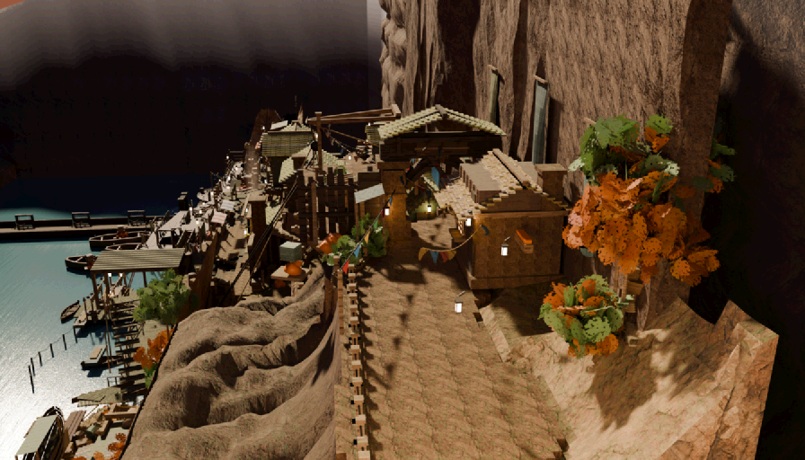
shelf-west The Shelf — shop street, west · bake 2026-08-06T22:15:20Z · fresh

shelf-east The Shelf — shop street, east · bake 2026-08-06T22:15:20Z · fresh

loop-stairs The Loop Stairs · bake 2026-08-06T11:26:59Z · fresh
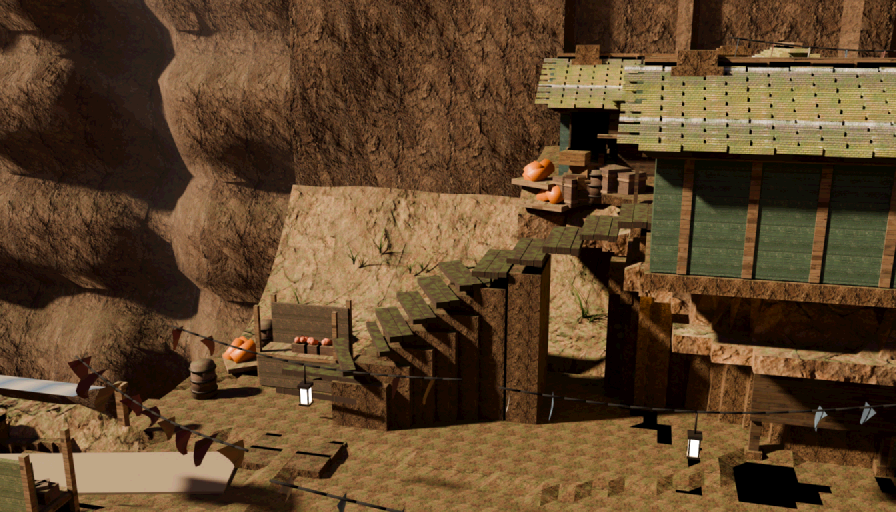
quay-west The Harbour Deck · bake 2026-08-06T22:07:32Z · fresh
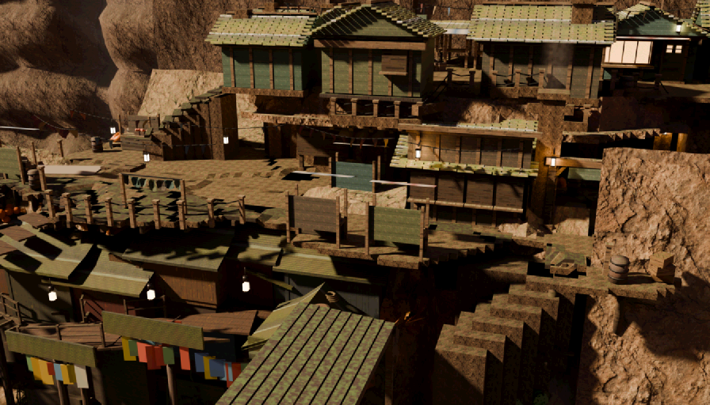
lockhead The Lockhead · bake 2026-08-06T11:26:59Z · fresh

cottage Keepers' Spur · bake 2026-08-06T11:26:59Z · fresh

crossing The Crossing · bake 2026-08-06T22:07:32Z · replayed
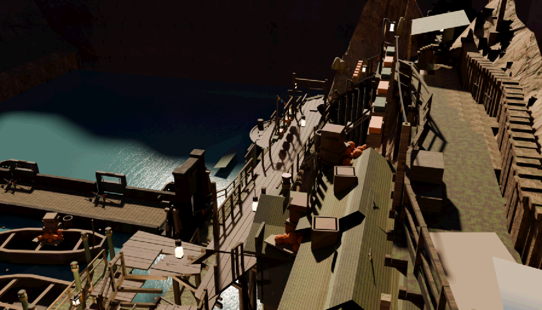
weave The Weave · bake 2026-08-06T22:07:32Z · fresh
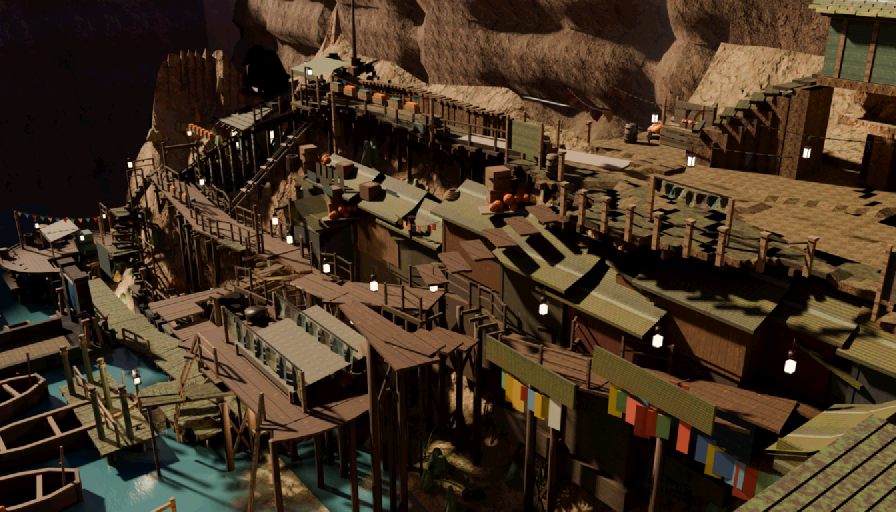
deep-stairs The Deep Stairs · bake 2026-08-06T22:07:32Z · fresh
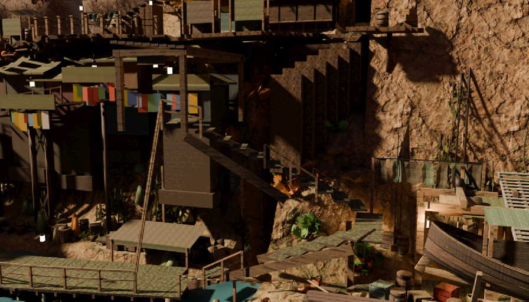
boatyard The Boatyard · bake 2026-08-06T22:07:32Z · fresh
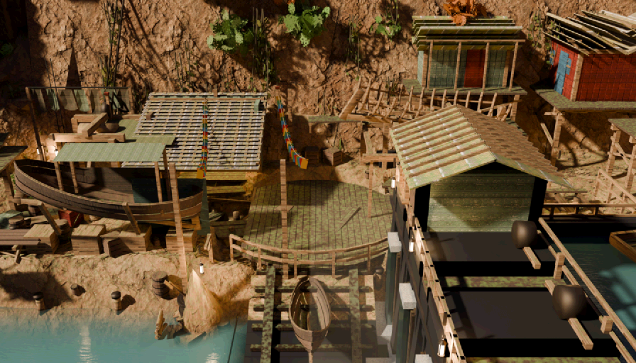
waterfront The Waterfront — winch foot · bake 2026-08-06T21:37:17Z · replayed
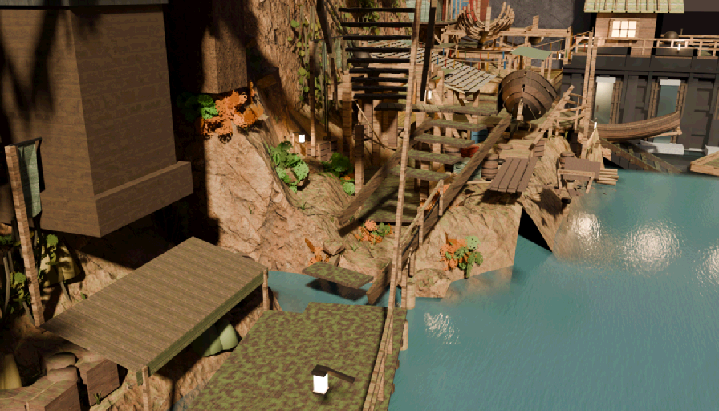
fishdock The Fish Dock · bake 2026-08-06T22:07:32Z · fresh
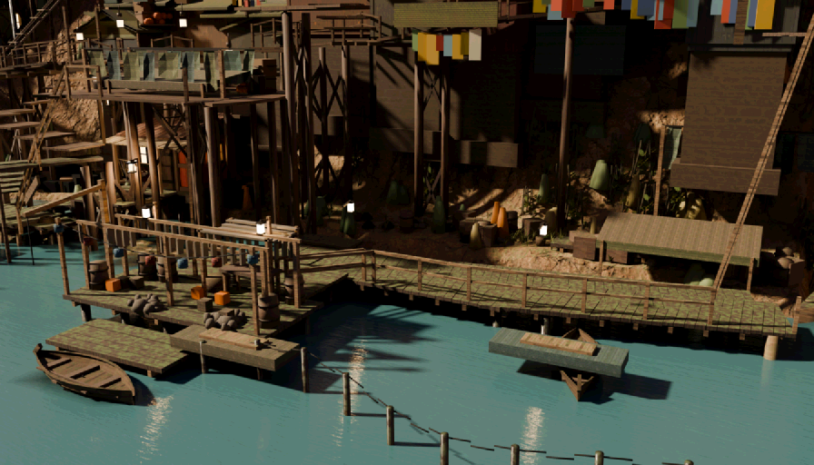
lockfive Lock Five · bake 2026-08-06T22:07:32Z · replayed
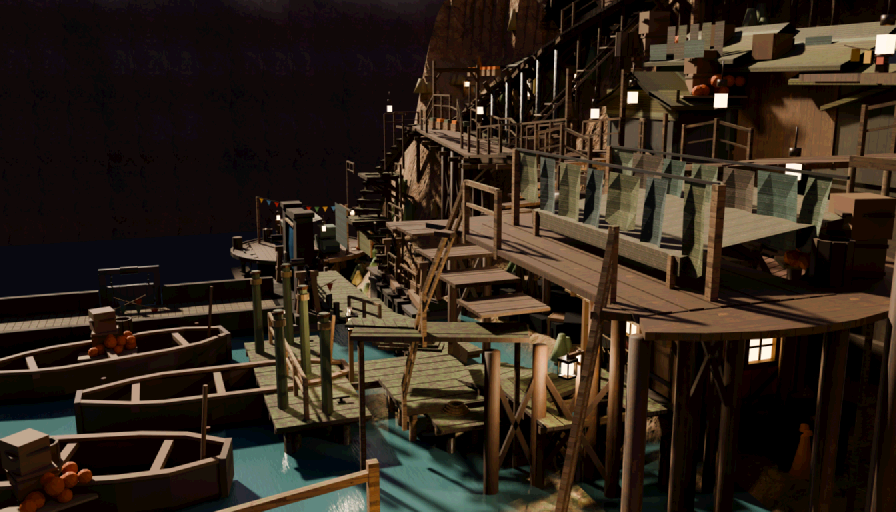
north-landing North Landing · bake 2026-08-06T21:40:37Z · fresh
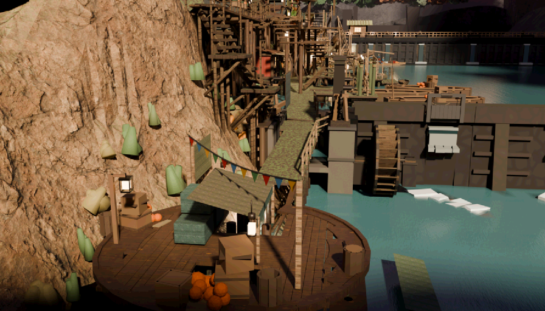
5 Limits — what this instrument structurally cannot see
This tool looks at pixels. Seam-canon §10.3 (amended after the loop-stairs post-mortem) is the reason that sentence needs a warning label:
“in frame” ≠ “visible” ≠ “unobstructed ray” ≠ catches a foot
The loop-stairs flight was 72% visible, correctly framed, unoccluded and handsome — and unwalkable,
because walkGround keeps the highest surface in the step window and the neighbouring
flight's top tread covered its head. It caught a foot in 0 of 72 entries. No critique of that plate
could ever have found it. What this tool cannot see, and where each of those defects is
caught:
- whether a walk surface catches a foot →
tools/ls_nav_probe.mjs,seam_walk.mjs - whether a solid blocks the body → WALKLOCK /
boxSolid,seam_test.mjs - whether a naive reading of the frame actually escapes the shot →
tools/nav_eval.mjs(it walks the answer) - whether a seam fires where it should →
seam_test.mjs,transition_test.mjs - true occlusion over a whole object, in metres → the bake ray-cast — the only visibility oracle — and
cine_visprobe.py - anything outside the shipped fixed frames → nothing automated sees it. The user plays with a free orbit camera; all five reference frames were taken from angles no plate holds.
A finding here is a perception, and a perception is not a measurement. Geometry findings ship
with a geometry_audit --region command for exactly this reason: the next step is to measure
it, not to believe it.
raw/, findings in
findings.json, discarded claims in refuted.json.